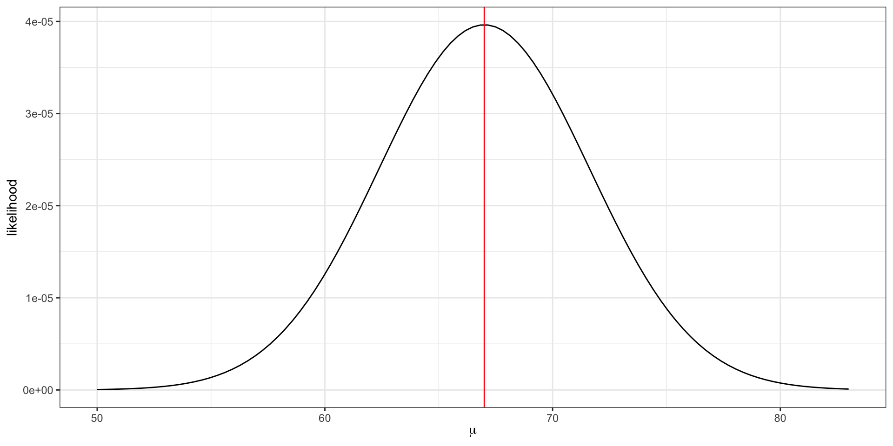

x = c(75, 58, 68)MLEs and MAPs
Background: likelihoods
Example: normal likelihood
Let \(X\) be the resting heart rate (RHR) in beats per minute of a student in this class.
Assume RHR is normally distributed with some mean \(\mu\) and standard deviation \(8\).
. . .
\[ \textbf{Data-generative model: } X_i \overset{\mathrm{iid}}{\sim} N(\mu, 64) \]
. . .
If we observe three student heart rates, {75, 58, 68} then our likelihood
\[L(\mu) = f_x(75 |\mu) \cdot f_x(58|\mu) \cdot f_x(68|\mu).\]
That is, the joint density function of the observed data, viewed as a function of the parameter.
. . .
Important
The likelihood itself is not a density function. The integral with respect to the parameter does not need to equal 1.
Visualizing the likelihood
\[L(\mu) = f_x(75 |\mu) \cdot f_x(58|\mu) \cdot f_x(68|\mu).\]
L = function(mu, x) {
stopifnot(is.numeric(x))
n = length(x)
likelihood = 1
for(i in 1:n){
likelihood = likelihood * dnorm(x[i], mean = mu, sd = 8)
}
return(likelihood)
}
ggplot() +
xlim(c(50, 83)) +
geom_function(fun = L, args = list(x = x)) +
theme_bw() +
labs(x = expression(mu), y = "likelihood") +
geom_vline(xintercept = 67, color = 'red'). . .
The maximum likelihood estimate \(\hat{\mu} = \frac{75 + 58 + 68}{3} = 67\).
The maximum likelihood estimate is the parameter value that maximizes the likelihood function.
The log-likelihood
Notice how small the y-axis is on the previous slide. What happens to the scale of the likelihood as we add additional data points?
\[ L(\mu) = \prod_{i = 1}^{n} f_x(x_i |\mu) \]
. . .
Since densities often evaluate between 0 and 1, multiplying many together (as we usually do in likelihoods) can quickly result in floating point underflow. That is, numbers smaller than the computer can actually represent in memory.
- Note: sometimes densities evaluate to greater than 1 (e.g.
dnorm(0, 0, 0.001)) and multiplying several together can result in overflow.
. . .
log to the rescue!
logis a monotonic function, i.e. \(x > y\) implies \(\log(x) > \log(y)\), because of this the maximum of \(f\) is the same as the maximum of \(\log f\).additionally,
logturns products into sums
in practice, we always work with the log-likelihood,
\[ \log L(\mu) = \sum_{i = 1}^n \log f_x(x_i | \mu). \]
MLE
Maximum likelihood estimation (MLE)
How did we know to take the average of the values to find the maximum likelihood estimator \(\hat{\mu}\)?
. . .
From calculus, we know that to maximize a function, we need to find where the slope equals zero (technically, to ensure we find some maxima and not a minima we need to also check that the second derivative is negative).
Example: normal likelihood
For the normal likelihood example on the previous slide, we can see visually that the function is concave.
To find the maximum,
\[ \begin{aligned} \frac{d}{d\mu} \log L(\mu) &= \sum_{i}\frac{d}{d\mu} \log f_x(x_i |\mu)\\ &= \sum_{i}\frac{d}{d\mu} \left[ -\frac{1}{2} \log (2 \pi \sigma^2) - \frac{1}{2\sigma^2} (x_i - \mu)^2 \right]\\ &= \sum_i \frac{1}{\sigma^2} (x_i - \mu) \end{aligned} \]
Setting the derivative equal to zero,
\[ \begin{aligned} \sum_i \left[ x_i - \hat{\mu} \right] &= 0\\ n \hat{\mu} &= \sum_i x_i\\ \hat{\mu} &= \bar{x} \end{aligned} \]
MAP
Maximum a posteriori probability (MAP)
In Bayesian inference, we wish to find the mode of the posterior, not the likelihood.
To find the posterior mode, \(\hat{\theta}\), we instead take the derivative of the log-posterior,
\[ \frac{d}{d\theta} \log p(\theta | y) = 0 \]
Practice exercise
As in class, let
\[ Y | \theta \sim \text{binomial}(n, \theta)\\ \theta \sim \text{beta}(a, b) \]
Find the closed-form solution for the posterior mode \(\hat{\theta}\).
Recreate Figure 1 from class using the same data
flipsprovided below but change the prior to \(\theta \sim \text{beta}(2, 2)\).
set.seed(3)
flips = rbinom(5000, size = 1, prob = 0.25)- Add a red vertical line to each subplot that shows the MAP estimate under the prior \(\theta \sim \text{beta}(2, 2)\).